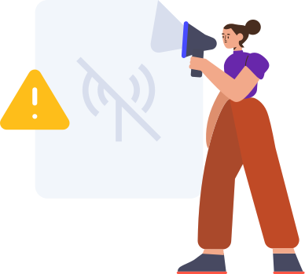

Oops! Inacessível!
Você precisa abrir essa página com internet primeiro para poder acessá-la offline!
Voltar ao inícioVocê precisa abrir essa página com internet primeiro para poder acessá-la offline!
Voltar ao início